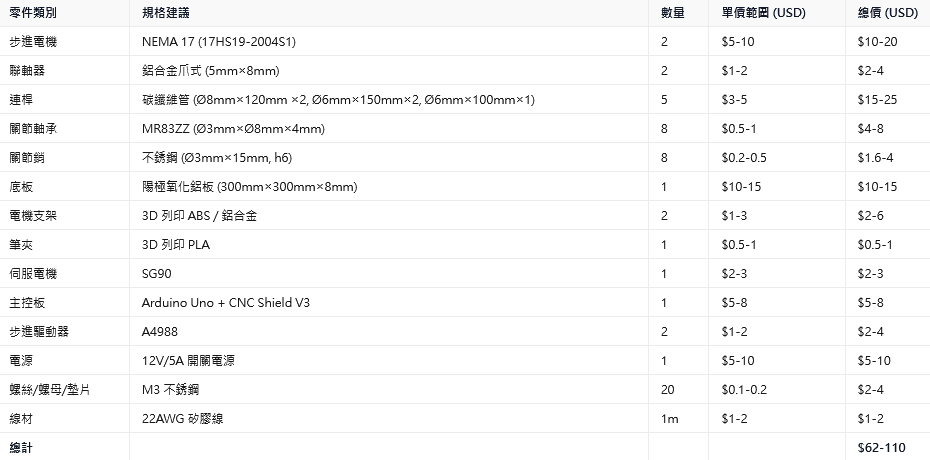
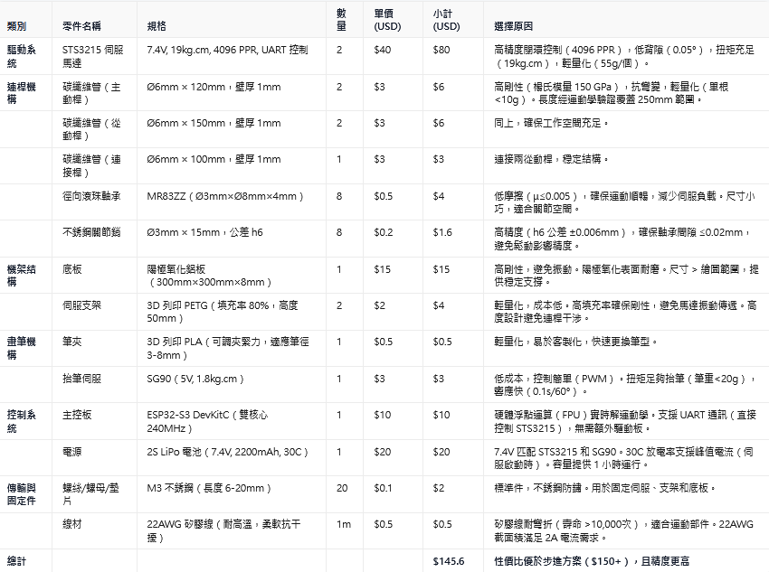
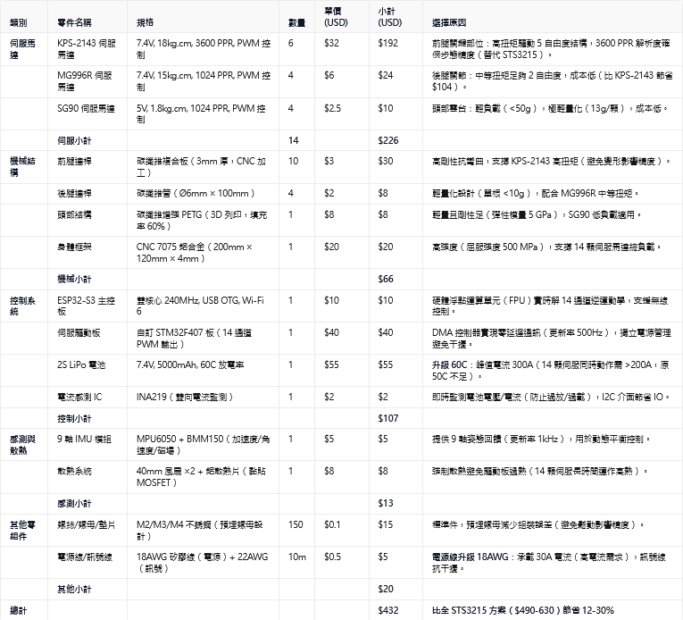

Mind-Map <<
Previous Next >> Teams
AI
https://grok.com
https://chat.z.ai
https://chatgpt.com/
https://github.com/copilot
https://gemini.google.com/app
繪圖範圍 20cm x 20cm 的小型 5bar linkage plotter，你會建議 BOM 零組件規格如何? 請詳細說明原因。
https://www.feetechrc.com/products 中的各 motor 若要用在 5bar linkage plotter 專案, 選哪一個, 請詳細說明原因。
希望實作 Openduck mini 專案，你會建議 BOM 零組件規格如何? 請詳細說明原因。
5bar linkage plotter 參考 BOM:
採用步進馬達:

採用 STS3215:

Openduck mini 參考 BOM:
ST3215: https://aifitlab.com/products/feetech-sts3215-servo-motor

提問:
請以目前最具前瞻與權威的教育學者群觀點發言，說明機械設計相關科系的大二學生該如何學習「電腦輔助設計與實習」課程，並透過虛實整合，驗證機電資控制系統的可行性?
請就此一主題，建議學習步驟，並列出學生身分可以免費使用的工具。
請就此一主題提供 15 則可以深入取得具體答覆的 AI 系統詢問句
1. 請詳細說明大二學生在學習 Fusion 360 進行機械零件參數化建模時，應該掌握的核心技能有哪些？
2. 如何利用 Onshape 教育版進行團隊協作設計，並確保版本控制與設計一致性？
3. 請列出 FreeCAD 中適合初學者進行機械運動學模擬的模組及使用步驟。
4. 在機械設計課程中，使用 Fusion 360 的 Motion Study 功能進行連桿機構運動模擬，該如何設定拘束條件？
5. 請解釋 Webots 如何整合機械模型與控制程式，並用具體範例說明 PID 控制在其中的應用。
6. 如何用 Tinkercad Circuits 模擬一個包含光電感測器與伺服馬達的簡易自動門控制系統？
7. 請比較 Scilab Xcos 與 MATLAB Simulink 在控制系統模擬上的優缺點，特別針對機電系統設計。
8. 學生如何利用 Wokwi Arduino 模擬環境有效測試多感測器控制系統的穩定性與反應速度？
9. 請提供一個完整的機電系統設計專案案例，從 CAD 建模到控制系統模擬，再到 Webots 虛擬測試。
10. 針對學生免費使用的軟體資源，如何設計一套循序漸進的學習計畫，有效結合機械設計與控制系統？
11. 如何使用 Fusion 360 與 Simscale 整合進行結構強度與熱傳模擬，以驗證機械設計的可靠性？
12. 請詳細說明 Arduino IDE 與 PlatformIO 開發環境在控制系統軟體撰寫上的差異與選擇建議。
13. Webots 中如何設定真實物理參數（如摩擦力、慣性矩）來提升機器人運動模擬的準確度？
14. 學生若無法取得實體機器人硬體，如何利用虛擬模擬工具達成機電系統整合的實作學習？
15. 請介紹目前最適合機械設計系學生免費取得的線上課程或教學平台，針對 CAD 與機電整合控制系統教學。
Mind-Map <<
Previous Next >> Teams